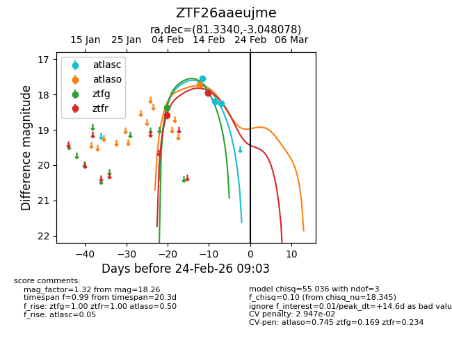
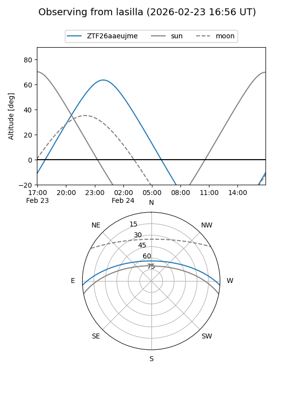
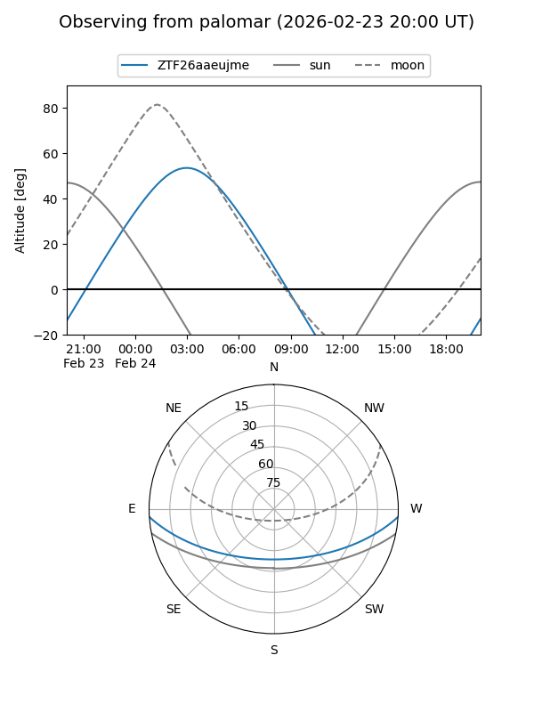
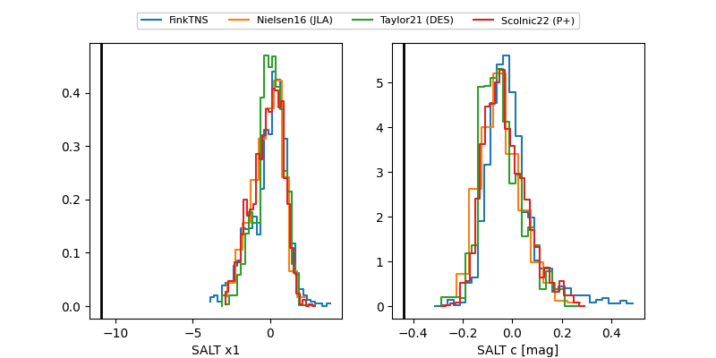

ZTF26aaeujme
Target ZTF26aaeujme at 2026-02-24 09:08
Aliases and brokers:
FINK: link
Lasair: link
ALeRCE: link
alt names
ZTF26aaeujme (ztf,fink_ztf)
Coordinates:
equatorial (ra, dec) = 81.3340,-3.04808
equatorial (HMS+DMS) = 05:25:20.15,-03:02:53.08
galactic (l, b) = (205.5866,-20.50779)
Flags:
likely cv
Photometry:
last atlasc=18.26, atlaso=17.73, ztfg=17.94, ztfr=17.96
3 atlasc, 1 atlaso, 2 ztfg, 2 ztfr detections
Lightcurve

Visibility


Additional plots
